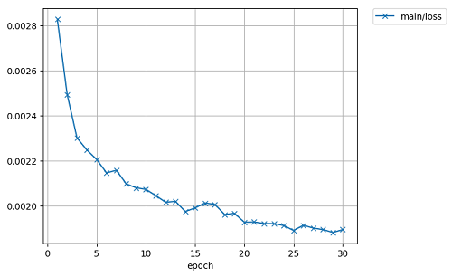

U型のネットワーク構造をもつU-Netを使って音楽のボーカル部分を分離する記事があった。
そこで、音楽と相関のない音声をミックスしたモノラル信号から音声部分を抜き出す実験をしてみた。
バックに音楽が流れていて、そこから音声だけを抽出するような場面を想定している。
wuyiming氏が公開している UNet-VocalSeparation-Chainer を
参考にして作り直したものである。
学習用に GTZAN music/speech collection から
music_speech.tar.gz をダウンロードして、music_speechディレクトリーの以下のmusic_wavとspeech_wavに展開する。
python3 make_dataset.py
音楽（music)と音声(speech)をミックスした信号（サンプリングレート16KHz、モノラル）を作成し、短時間フーリエ変換を計算する。
U-Netのモデル初期値としてunet.modelを UNet-VocalSeparation-Chainer から
ダウンロードして使う。train.pyと同じディレクトリーに置く。
このunet.modelを使っても おおむね分離できるが、GTZAN music/speech collectionを使って学習してみる。
python3 train.py
下図は学習過程の損失の変化のグラフ。学習データはすべて訓練用に利用する。テストはなし。

GPU(引数に -g 0）でメモリー不足エラーがでる場合、バッチサイズを小さくする（例えば引数に -b 32 を指定する）と動くかもしれない。
入出ファイル（又は、ディレクトリー）とU-Netの計算に使うモデルファイルを指定する。
例１ UNet-VocalSeparation-Chainerのunet.modelを使って分離する。
python3 make_separate.py -i mixed_input.wav -o separeted_output.wav -m unet.model
出力は、サンプリングレート16KHz、モノラルのwavファイルになる。
例2 学習結果のモデルファイルmodel_420を使って ディレクトリーの中にあるwavファイルを分離する。
python3 make_separate.py -i mixdown -o separate -m result/model_420
単にイコライザーをかけて音楽成分を目立たなくした様なものもあれば、
音楽信号の方が大きいため？分離しても音声の明瞭度がかなり落ちている部分もある。
聞き比べた結果、unet.modelを使ったほうが多少音質がまとものように感じた。
学習データとは云えかなり分離できているものもある。不思議なことである。
(mixdownとseparateディレクトリーにの中にミックスしたもと信号と分離したもののサンプルが有ります。)